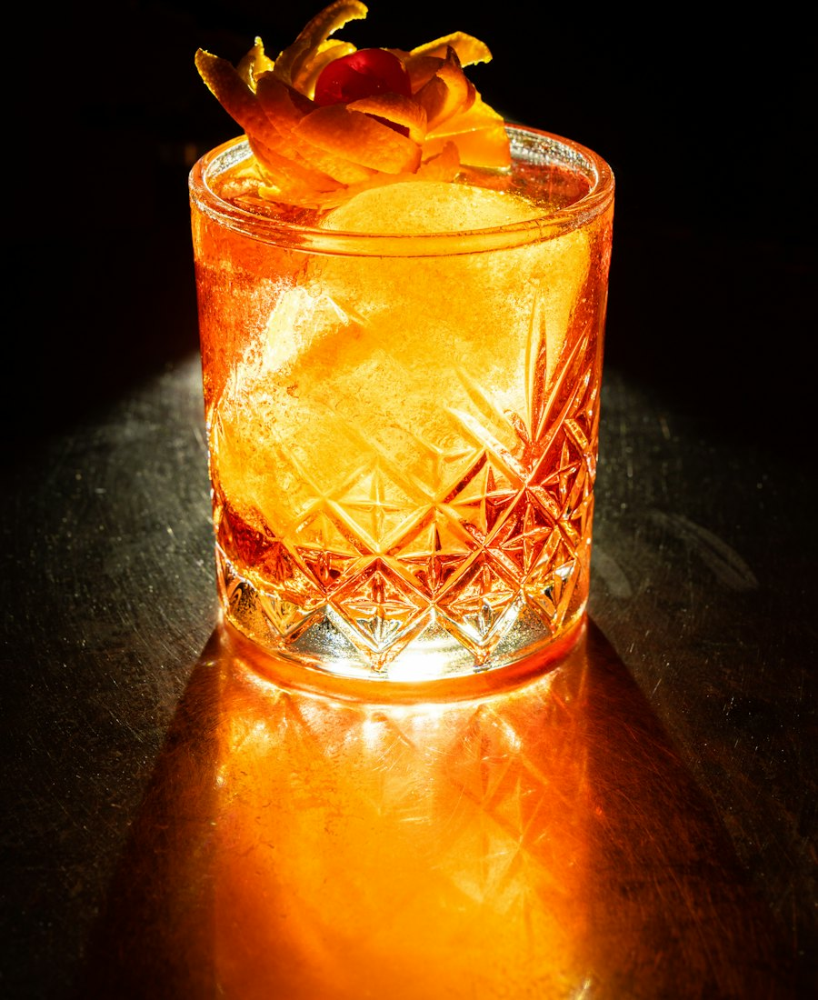

<!doctype html>
<html lang="ru">
<head>
<meta charset="utf-8">
<meta name="viewport" content="width=device-width, initial-scale=1, viewport-fit=cover">
<meta name="theme-color" content="#111113">
<script>try{document.documentElement.dataset.theme=JSON.parse(localStorage.getItem('bar.theme'))||'graphite'}catch(e){document.documentElement.dataset.theme='graphite'}</script>
<meta name="color-scheme" content="dark">
<title>Бар на вечер</title>
<link rel="stylesheet" href="fonts/fonts.css">
<style>
:root{
  color-scheme: dark;
  --bg:#111113; --bg-rgb:17,17,19;
  --bg-deep:#0a0a0b;
  --card:#1a1a1d;
  --card-2:#232327;
  --line:rgba(244,241,236,.08);
  --line-2:rgba(244,241,236,.14);
  --text:#f4f1ec;
  --muted:#a6a39e;
  --faint:#706d68;
  --accent:#f0963c;
  --accent-2:#f6b46c;
  --accent-soft:rgba(240,150,60,.14);
  --accent-ink:#1c1006;
  --on-photo:#f6f2ec;
  --nav-bg:rgba(30,30,34,.82);
  --serif:"Playfair Display", Georgia, "Times New Roman", serif;
  --sans:"Manrope", system-ui, -apple-system, Roboto, sans-serif;
  --sat:max(env(safe-area-inset-top, 0px), var(--safe-area-inset-top, 0px));
  --sab:max(env(safe-area-inset-bottom, 0px), var(--safe-area-inset-bottom, 0px));
  --sal:max(env(safe-area-inset-left, 0px), var(--safe-area-inset-left, 0px));
  --sar:max(env(safe-area-inset-right, 0px), var(--safe-area-inset-right, 0px));
  --gut:20px;
  --ease:cubic-bezier(.2,.8,.2,1);
}
[data-theme="wine"]{
  --bg:#1a0e12; --bg-rgb:26,14,18; --bg-deep:#11080b; --card:#26151a; --card-2:#311c22;
  --line:rgba(250,236,230,.08); --line-2:rgba(250,236,230,.15);
  --text:#f8eee9; --muted:#bba5a3; --faint:#86696c;
  --accent:#efa86a; --accent-2:#f6c495; --accent-soft:rgba(239,168,106,.14); --accent-ink:#2a120a;
  --nav-bg:rgba(44,24,30,.84);
}
[data-theme="night"]{
  --bg:#0c1120; --bg-rgb:12,17,32; --bg-deep:#070b15; --card:#141b2d; --card-2:#1b2439;
  --line:rgba(234,239,250,.08); --line-2:rgba(234,239,250,.15);
  --text:#eef2fa; --muted:#9ba4b8; --faint:#646e84;
  --accent:#f59a45; --accent-2:#f9b878; --accent-soft:rgba(245,154,69,.15); --accent-ink:#1d1006;
  --nav-bg:rgba(24,32,52,.84);
}
[data-theme="cream"]{
  color-scheme: light;
  --bg:#f5f0e8; --bg-rgb:245,240,232; --bg-deep:#ece5d9; --card:#fffdf9; --card-2:#f3ede3;
  --line:rgba(45,32,20,.09); --line-2:rgba(45,32,20,.17);
  --text:#1f1812; --muted:#6c6155; --faint:#9a8e80;
  --accent:#de7a2c; --accent-2:#b85d15; --accent-soft:rgba(222,122,44,.12); --accent-ink:#fffaf3;
  --nav-bg:rgba(255,253,249,.86);
}
[data-theme="cream"] .row,[data-theme="cream"] .portions,[data-theme="cream"] .acc details,[data-theme="cream"] .quote{box-shadow:0 10px 30px -18px rgba(60,40,20,.35)}
[data-theme="cream"] .nav{box-shadow:0 18px 40px -14px rgba(60,40,20,.4)}
[data-theme="cream"] .mode .bg img{opacity:.3}
*{box-sizing:border-box;-webkit-tap-highlight-color:transparent}
html{background:var(--bg);-webkit-text-size-adjust:100%;text-size-adjust:100%}
body{margin:0;min-height:100vh;background:var(--bg);color:var(--text);font:400 16px/1.5 var(--sans);overscroll-behavior-y:none;font-variant-numeric:tabular-nums}
button{font:inherit;color:inherit;background:none;border:0;padding:0;cursor:pointer}
a{color:inherit;text-decoration:none}
img{display:block}
.wrap{max-width:640px;margin:0 auto;padding:0 calc(var(--sar) + var(--gut)) 0 calc(var(--sal) + var(--gut))}
.enter{animation:enter .35s var(--ease)}
@keyframes enter{from{opacity:0;transform:translateY(12px)}to{opacity:1;transform:none}}
.serif{font-family:var(--serif);font-weight:600;letter-spacing:-.01em}
.label{font:700 11px/1 var(--sans);letter-spacing:.16em;text-transform:uppercase;color:var(--accent)}
.round{flex:none;width:44px;height:44px;border-radius:50%;display:grid;place-items:center;color:var(--on-photo);
  background:rgba(11,18,14,.5);-webkit-backdrop-filter:blur(12px);backdrop-filter:blur(12px);border:1px solid rgba(255,255,255,.14)}
.round:active{transform:scale(.94)}

/* ---------- главная ---------- */
.home{padding-top:calc(var(--sat) + 24px);padding-bottom:calc(var(--sab) + 110px)}
.greet{color:var(--muted);font-size:15px;font-weight:500}
.home h1{font:600 38px/1.08 var(--serif);margin:6px 0 22px;letter-spacing:-.015em}
.home h1 em{font-style:italic;font-weight:500;color:var(--accent-2)}
.tabs{display:flex;gap:22px;overflow-x:auto;scrollbar-width:none;margin:0 calc(-1 * var(--gut)) 20px;padding:0 var(--gut);border-bottom:1px solid var(--line)}
.tabs::-webkit-scrollbar{display:none}
.tab{flex:none;position:relative;padding:4px 0 14px;font-weight:600;font-size:15px;color:var(--faint);transition:color .2s}
.tab[aria-pressed="true"]{color:var(--text)}
.tab[aria-pressed="true"]::after{content:"";position:absolute;left:0;right:0;bottom:-1px;height:2px;border-radius:2px;background:var(--accent)}

.feature{position:relative;display:block;color:var(--on-photo);height:min(118vw,470px);border-radius:28px;overflow:hidden;isolation:isolate;box-shadow:0 30px 60px -30px rgba(0,0,0,.8)}
.feature img{position:absolute;inset:0;width:100%;height:100%;object-fit:cover;z-index:-2;transition:transform .6s var(--ease)}
.feature:active img{transform:scale(1.03)}
.feature::after{content:"";position:absolute;inset:0;z-index:-1;background:linear-gradient(180deg,rgba(8,12,10,.35) 0,rgba(8,12,10,0) 30%,rgba(8,12,10,0) 45%,rgba(8,12,10,.88) 100%)}
.feature .top{position:absolute;top:18px;left:18px;right:18px;display:flex;justify-content:space-between;align-items:center}
.pill{display:inline-flex;align-items:center;gap:6px;height:30px;padding:0 12px;border-radius:999px;font:600 12.5px/1 var(--sans);
  background:rgba(11,18,14,.5);-webkit-backdrop-filter:blur(12px);backdrop-filter:blur(12px);border:1px solid rgba(255,255,255,.12);color:var(--on-photo)}
.feature .bot{position:absolute;left:20px;right:20px;bottom:20px;display:flex;align-items:flex-end;gap:16px}
.feature h2{font:600 34px/1.05 var(--serif);margin:8px 0 10px}
.feature .sub{color:rgba(246,242,236,.78);font-size:14px}
.go{flex:none;width:56px;height:56px;border-radius:50%;display:grid;place-items:center;background:var(--accent);color:var(--accent-ink)}

.sec-h{display:flex;align-items:baseline;justify-content:space-between;margin:34px 0 14px}
.sec-h h2{font:600 24px/1.1 var(--serif);margin:0}
.sec-h span{color:var(--faint);font-size:14px;font-weight:600}

.rail{display:flex;gap:12px;overflow-x:auto;scroll-snap-type:x mandatory;scrollbar-width:none;margin:0 calc(-1 * var(--gut));padding:0 var(--gut)}
.rail::-webkit-scrollbar{display:none}
.mini{flex:none;width:150px;scroll-snap-align:start}
.mini .ph{position:relative;height:190px;border-radius:22px;overflow:hidden}
.mini img{width:100%;height:100%;object-fit:cover}
.mini .ph .pill{position:absolute;left:10px;bottom:10px;height:26px;font-size:12px}
.mini h3{font:600 17px/1.2 var(--serif);margin:10px 2px 0}

/* ---------- темы ---------- */
.home-head{display:flex;align-items:flex-start;justify-content:space-between;gap:12px}
.theme-btn{flex:none;width:44px;height:44px;border-radius:50%;display:grid;place-items:center;border:1px solid var(--line-2);color:var(--text);background:var(--card)}
.sheet-bg{position:fixed;inset:0;z-index:40;background:rgba(0,0,0,.5);opacity:0;transition:opacity .25s}
.sheet-bg.show{opacity:1}
.sheet{position:fixed;left:0;right:0;bottom:0;z-index:41;max-width:640px;margin:0 auto;padding:12px calc(var(--sar) + var(--gut)) calc(var(--sab) + 22px) calc(var(--sal) + var(--gut));
  background:var(--card);border-radius:28px 28px 0 0;border:1px solid var(--line);transform:translateY(100%);transition:transform .3s var(--ease)}
.sheet.show{transform:none}
.sheet .grab{width:40px;height:4px;border-radius:4px;background:var(--line-2);margin:0 auto 16px}
.sheet h2{font:600 24px/1.1 var(--serif);margin:0 0 16px}
.themes{display:grid;grid-template-columns:1fr 1fr;gap:10px}
.th{display:block;text-align:left;padding:10px;border-radius:20px;border:1.5px solid var(--line);background:var(--bg)}
.th[aria-pressed="true"]{border-color:var(--accent)}
.th .sw{height:88px;border-radius:14px;padding:10px;display:flex;flex-direction:column;justify-content:space-between;position:relative;overflow:hidden}
.th .sw i{display:block;height:8px;border-radius:4px;width:62%}
.th .sw i + i{width:40%;opacity:.5}
.th .sw b{position:absolute;right:10px;bottom:10px;width:26px;height:26px;border-radius:50%}
.th span{display:flex;align-items:center;justify-content:space-between;margin:10px 4px 2px;font-weight:700;font-size:14.5px;color:var(--text)}
.th span svg{color:var(--accent)}
.upd p{margin:0 0 14px;color:var(--muted);font-size:15px;line-height:1.5}
.upd ul{margin:0 0 18px;padding:0;list-style:none;display:grid;gap:8px}
.upd li{position:relative;padding-left:16px;font-size:15px;line-height:1.45}
.upd li::before{content:"";position:absolute;left:0;top:9px;width:6px;height:6px;border-radius:50%;background:var(--accent)}
.btn{display:flex;align-items:center;justify-content:center;gap:8px;width:100%;height:56px;border-radius:999px;font-weight:800;font-size:16px}
.btn.pri{background:var(--accent);color:var(--accent-ink);position:relative;overflow:hidden}
.btn.pri i{position:absolute;left:0;top:0;bottom:0;background:rgba(255,255,255,.22);transition:width .2s}
.btn.pri span{position:relative}
.btn.pri:disabled{opacity:.85}
.btn.ghost{color:var(--muted);margin-top:6px}
.ver{margin:28px 0 0;padding:16px 18px;border-radius:22px;border:1px solid var(--line);display:flex;align-items:center;justify-content:space-between;gap:12px}
.ver b{display:block;font-weight:700}
.ver span{color:var(--faint);font-size:13.5px}
.ver button{flex:none;height:40px;padding:0 16px;border-radius:999px;border:1px solid var(--line-2);font-weight:700;font-size:14px;color:var(--text)}

.list{display:grid;gap:10px}
.row{display:flex;align-items:center;gap:14px;padding:10px;border-radius:22px;background:var(--card);border:1px solid var(--line);transition:background .15s,transform .15s}
.row:active{transform:scale(.985);background:var(--card-2)}
.row img{flex:none;width:76px;height:76px;border-radius:16px;object-fit:cover}
.row .tx{flex:1;min-width:0}
.row h3{font:600 19px/1.2 var(--serif);margin:0 0 5px}
.row p{margin:0;color:var(--muted);font-size:13.5px;display:flex;gap:6px;align-items:center;flex-wrap:wrap}
.dot{width:3px;height:3px;border-radius:50%;background:var(--faint)}
.row .chev{flex:none;width:36px;height:36px;border-radius:50%;display:grid;place-items:center;border:1px solid var(--line-2);color:var(--muted);margin-right:4px}
.row .ok{color:var(--accent)}
.empty{color:var(--muted);text-align:center;padding:40px 0}

/* ---------- нижняя панель ---------- */
.nav{position:fixed;left:50%;bottom:calc(var(--sab) + 16px);transform:translateX(-50%);z-index:10;display:flex;gap:4px;padding:6px;border-radius:999px;
  background:var(--nav-bg);-webkit-backdrop-filter:blur(18px) saturate(1.4);backdrop-filter:blur(18px) saturate(1.4);border:1px solid var(--line-2);box-shadow:0 20px 40px -12px rgba(0,0,0,.7)}
.nav a{display:flex;align-items:center;gap:8px;height:48px;padding:0 18px;border-radius:999px;color:var(--muted);font-weight:700;font-size:14px;transition:background .2s,color .2s}
.nav a[aria-current="page"]{background:var(--accent);color:var(--accent-ink)}

/* ---------- рецепт ---------- */
.detail{padding-bottom:calc(var(--sab) + 120px)}
.topbar{position:fixed;top:0;left:0;right:0;z-index:8;display:flex;align-items:center;gap:12px;padding:calc(var(--sat) + 10px) calc(var(--sar) + 16px) 10px calc(var(--sal) + 16px);transition:background .25s,border-color .25s;border-bottom:1px solid transparent}
.topbar .t{color:var(--text);font:600 18px/1.2 var(--serif);opacity:0;transition:opacity .2s;white-space:nowrap;overflow:hidden;text-overflow:ellipsis}
.topbar.solid{background:rgba(var(--bg-rgb),.88);-webkit-backdrop-filter:blur(18px);backdrop-filter:blur(18px);border-bottom-color:var(--line)}
.topbar.solid .t{opacity:1}
.hero{position:relative;height:min(64vh,560px);margin:0 calc(-1 * var(--gut));border-radius:0 0 34px 34px;overflow:hidden;isolation:isolate}
.hero img{position:absolute;inset:0;width:100%;height:100%;object-fit:cover;z-index:-2;animation:zoom 1.4s var(--ease)}
@keyframes zoom{from{transform:scale(1.1)}to{transform:none}}
.hero::after{content:"";position:absolute;inset:0;z-index:-1;background:linear-gradient(180deg,rgba(8,12,10,.5) 0,rgba(8,12,10,0) 22%,rgba(8,12,10,0) 50%,rgba(8,12,10,.9) 100%)}
.hero .cap{color:var(--on-photo);position:absolute;left:var(--gut);right:var(--gut);bottom:24px}
.hero h1{font:600 42px/1.02 var(--serif);margin:10px 0 0;letter-spacing:-.02em}
.stats{display:grid;grid-template-columns:repeat(3,1fr);margin:22px 0 4px}
.stats div{text-align:center;padding:2px 6px}
.stats div + div{border-left:1px solid var(--line-2)}
.stats b{display:block;font:600 20px/1.1 var(--serif)}
.stats span{display:block;color:var(--faint);font-size:12.5px;margin-top:5px;font-weight:600}
.lead{color:var(--muted);font-size:16px;line-height:1.6;margin:20px 0 0}
.block{margin-top:34px}
.block > h2{display:flex;align-items:baseline;justify-content:space-between;gap:10px;font:600 26px/1.1 var(--serif);margin:0 0 16px}
.block > h2 small{font:600 13px/1 var(--sans);color:var(--faint)}

.portions{display:flex;align-items:center;justify-content:space-between;gap:12px;padding:14px 14px 14px 18px;border-radius:22px;background:var(--card);border:1px solid var(--line)}
.portions b{display:block;font-weight:700}
.portions span{color:var(--muted);font-size:13.5px}
.ctrl{display:flex;align-items:center;gap:2px;padding:4px;border-radius:999px;background:var(--bg-deep);border:1px solid var(--line)}
.ctrl button{width:42px;height:42px;border-radius:50%;display:grid;place-items:center;font-size:22px;font-weight:500}
.ctrl button:active{background:var(--card-2)}
.ctrl button:disabled{opacity:.25}
.ctrl output{min-width:34px;text-align:center;font:600 20px/1 var(--serif)}
.note{display:flex;gap:10px;align-items:flex-start;margin:12px 4px 0;color:var(--muted);font-size:14px;line-height:1.5}
.note svg{flex:none;color:var(--accent);margin-top:2px}
.note b{color:var(--text)}

.ing{list-style:none;margin:0;padding:0}
.ing li + li{border-top:1px solid var(--line)}
.ing button{display:flex;align-items:center;gap:14px;width:100%;padding:13px 2px;text-align:left}
.ck{flex:none;width:24px;height:24px;border-radius:50%;border:1.5px solid var(--line-2);display:grid;place-items:center;color:transparent;transition:all .15s}
[aria-pressed="true"] > .ck{background:var(--accent);border-color:var(--accent);color:var(--accent-ink)}
.ing .n{flex:1;font-weight:600}
.ing .n small{display:block;color:var(--faint);font-weight:500;font-size:13px;margin-top:1px}
.ing .q{font-weight:700;color:var(--accent-2);white-space:nowrap}
.ing [aria-pressed="true"] .n{color:var(--muted)}
.tools{display:flex;flex-wrap:wrap;gap:8px}
.tools span{padding:9px 14px;border-radius:999px;border:1px solid var(--line-2);font-size:14px;font-weight:600;color:var(--muted)}

.steps{list-style:none;margin:0;padding:0}
.step{display:flex;gap:16px;width:100%;text-align:left;padding:16px 0;border-top:1px solid var(--line)}
.steps li:first-child .step{border-top:0;padding-top:4px}
.step .no{flex:none;width:30px;font:600 italic 20px/1.3 var(--serif);color:var(--accent)}
.step .body{flex:1;min-width:0}
.step .txt{font-size:16.5px;line-height:1.55}
.amt{font-weight:800;color:var(--accent-2);white-space:nowrap}
.why{display:block;color:var(--faint);font-size:14px;margin-top:6px;line-height:1.45}
.step[aria-pressed="true"] .txt{color:var(--faint);text-decoration:line-through;text-decoration-color:var(--line-2)}
.step[aria-pressed="true"] .no{color:var(--faint)}
.timer{margin-top:10px;display:inline-flex;align-items:center;gap:8px;height:34px;padding:0 14px 0 10px;border-radius:999px;background:var(--accent-soft);color:var(--accent-2);font-weight:700;font-size:13.5px}
.timer.run{background:var(--accent);color:var(--accent-ink)}
.reset{color:var(--muted);font-weight:700;font-size:13px}

.quote{margin-top:34px;padding:22px;border-radius:24px;background:linear-gradient(160deg,var(--card-2),var(--card));border:1px solid var(--line);position:relative}
.quote::before{content:"“";position:absolute;top:-6px;right:18px;font:600 90px/1 var(--serif);color:var(--accent);opacity:.35}
.quote .label{display:block;margin-bottom:10px}
.quote p{margin:0;font:500 italic 18px/1.5 var(--serif);color:var(--text)}
.next{display:flex;align-items:center;gap:14px;margin-top:14px;padding:10px;border-radius:22px;border:1px solid var(--line-2)}
.next img{width:56px;height:56px;border-radius:14px;object-fit:cover}
.next small{display:block;color:var(--faint);font-weight:700;font-size:11px;letter-spacing:.14em;text-transform:uppercase}
.next b{display:block;font:600 18px/1.2 var(--serif);margin-top:4px}
.next .chev{margin-left:auto;margin-right:8px;color:var(--muted)}
.credit{text-align:center;color:var(--faint);font-size:12px;margin-top:24px}

.cta{position:fixed;left:0;right:0;bottom:0;z-index:9;padding:24px calc(var(--sar) + var(--gut)) calc(var(--sab) + 16px) calc(var(--sal) + var(--gut));
  background:linear-gradient(180deg,rgba(var(--bg-rgb),0),rgba(var(--bg-rgb),.92) 40%,var(--bg))}
.cta a{max-width:600px;margin:0 auto;display:flex;align-items:center;justify-content:space-between;height:60px;padding:0 8px 0 24px;border-radius:999px;background:var(--accent);color:var(--accent-ink);font-weight:800;font-size:16.5px;box-shadow:0 14px 30px -10px rgba(240,150,60,.5)}
.cta a:active{transform:scale(.98)}
.cta a span{font-weight:600;font-size:13.5px;opacity:.7;margin-left:8px}
.cta a i{width:46px;height:46px;border-radius:50%;display:grid;place-items:center;background:rgba(28,16,6,.12)}

/* ---------- пошаговый режим ---------- */
.mode{position:fixed;inset:0;z-index:20;display:flex;flex-direction:column;background:var(--bg);
  padding:calc(var(--sat) + 10px) calc(var(--sar) + var(--gut)) calc(var(--sab) + 16px) calc(var(--sal) + var(--gut))}
.mode .bg{position:absolute;inset:0;z-index:-1;overflow:hidden}
.mode .bg img{width:100%;height:100%;object-fit:cover;filter:blur(30px) saturate(1.2);transform:scale(1.2);opacity:.22}
.mode .bg::after{content:"";position:absolute;inset:0;background:linear-gradient(180deg,rgba(var(--bg-rgb),.4),var(--bg) 70%)}
.mode-top{display:flex;align-items:center;gap:12px}
.mode-top .who{flex:1;min-width:0;display:flex;align-items:center;gap:10px}
.mode-top .who img{width:36px;height:36px;border-radius:10px;object-fit:cover}
.mode-top .who b{display:block;font:600 16px/1.2 var(--serif);white-space:nowrap;overflow:hidden;text-overflow:ellipsis}
.mode-top .who span{color:var(--faint);font-size:12.5px;font-weight:600}
.segs{display:flex;gap:4px;margin:16px 0 0}
.segs i{flex:1;height:4px;border-radius:4px;background:var(--line-2);overflow:hidden;position:relative}
.segs i.on{background:var(--accent)}
.segs i.cur{background:linear-gradient(90deg,var(--accent) 50%,var(--line-2) 50%)}
.stage{flex:1;display:flex;flex-direction:column;justify-content:center;padding:20px 0;overflow-y:auto;min-height:0}
.stage .big{font:600 italic 88px/1 var(--serif);color:var(--accent);letter-spacing:-.03em}
.stage .of{color:var(--faint);font-weight:700;font-size:13px;letter-spacing:.14em;text-transform:uppercase;margin:6px 0 18px}
.stage .txt{font:500 25px/1.38 var(--serif);letter-spacing:-.005em}
.stage .txt .amt{font-family:var(--sans);font-weight:800;font-size:.86em}
.stage .why{font-size:15.5px;margin-top:16px;color:var(--muted)}
.ring{margin-top:26px;display:flex;align-items:center;gap:16px}
.ring button{position:relative;width:92px;height:92px;border-radius:50%;display:grid;place-items:center}
.ring svg.trk{position:absolute;inset:0;transform:rotate(-90deg)}
.ring .num{position:relative;display:grid;place-items:center}
.ring .num{font:600 26px/1 var(--serif)}
.ring .hint{color:var(--muted);font-size:14px;line-height:1.4}
.ring .hint b{display:block;color:var(--text);font-size:15px}
.mode-bot{display:flex;gap:10px}
.mode-bot button{height:58px;border-radius:999px;font-weight:800;font-size:16px;display:flex;align-items:center;justify-content:center;gap:8px}
.mode-bot .prev{width:58px;flex:none;border:1px solid var(--line-2)}
.mode-bot .prev:disabled{opacity:.3}
.mode-bot .nextb{flex:1;background:var(--accent);color:var(--accent-ink)}
.slide-l{animation:slideL .32s var(--ease)}
.slide-r{animation:slideR .32s var(--ease)}
@keyframes slideL{from{opacity:0;transform:translateX(28px)}to{opacity:1;transform:none}}
@keyframes slideR{from{opacity:0;transform:translateX(-28px)}to{opacity:1;transform:none}}

/* ---------- основы ---------- */
.basics-hero{position:relative;height:min(46vh,380px);margin:0 calc(-1 * var(--gut));border-radius:0 0 34px 34px;overflow:hidden;isolation:isolate}
.basics-hero img{position:absolute;inset:0;width:100%;height:100%;object-fit:cover;z-index:-2}
.basics-hero::after{content:"";position:absolute;inset:0;z-index:-1;background:linear-gradient(180deg,rgba(8,12,10,.3),rgba(8,12,10,.1) 40%,rgba(8,12,10,.9))}
.basics-hero .cap{color:var(--on-photo);position:absolute;left:var(--gut);right:var(--gut);bottom:24px}
.basics-hero h1{font:600 40px/1.05 var(--serif);margin:10px 0 6px}
.basics-hero p{margin:0;color:rgba(246,242,236,.78)}
.acc{margin-top:24px;display:grid;gap:10px}
.acc details{border-radius:22px;background:var(--card);border:1px solid var(--line);overflow:hidden}
.acc summary{list-style:none;display:flex;align-items:center;gap:14px;padding:18px;cursor:pointer}
.acc summary::-webkit-details-marker{display:none}
.acc summary i{flex:none;font:600 italic 20px/1 var(--serif);color:var(--accent);width:28px}
.acc summary b{flex:1;font:600 19px/1.25 var(--serif)}
.acc summary svg{flex:none;color:var(--muted);transition:transform .25s}
.acc details[open] summary svg{transform:rotate(180deg)}
.acc .in{padding:0 18px 18px 60px}
.acc .in > p{margin:0 0 12px;color:var(--muted);font-size:15px}
.acc ol{margin:0;padding:0;list-style:none;display:grid;gap:10px}
.acc ol li{position:relative;padding-left:18px;font-size:15.5px;line-height:1.5}
.acc ol li::before{content:"";position:absolute;left:0;top:10px;width:6px;height:6px;border-radius:50%;background:var(--accent)}
.acc .tipline{margin-top:14px;padding-top:12px;border-top:1px solid var(--line);color:var(--muted);font-size:14px}
.acc .tipline b{color:var(--text)}

.toast{position:fixed;left:50%;bottom:calc(var(--sab) + 96px);transform:translate(-50%,16px);opacity:0;pointer-events:none;z-index:30;
  background:var(--text);color:var(--bg);padding:12px 20px;border-radius:999px;font-weight:700;font-size:14px;transition:all .25s var(--ease);white-space:nowrap}
.toast.show{opacity:1;transform:translate(-50%,0)}
@media (prefers-reduced-motion:reduce){.enter,.hero img,.slide-l,.slide-r{animation:none}*{transition:none!important}}
</style>
</head>
<body>
<div id="app"></div>
<div class="toast" id="toast" role="status" aria-live="polite"></div>
<script>
/* Данные. shake — сколько порций за раз вмещает шейкер на 500 мл (0 — шейкер не нужен).
   В шагах: {g:id} — на один бокал, {b:id} — на один заход шейкера, {a:id} — на все порции. */
const R = [
{
  id:'mojito', name:'Мохито', base:['rum'], glass:'rocks', colors:['#e6f7c9','#7cc47f'], garnish:'#9ad26a',
  desc:'Классика с мятой и лаймом: свежий, кисло-сладкий, с пузырьками содовой.',
  time:5, vol:170, shake:3,
  ing:[
    {k:'rum', n:'Белый ром', q:40, u:'мл'},
    {k:'lime', n:'Сок лайма', q:20, u:'мл', h:'≈ ½ лайма'},
    {k:'syr', n:'Сахарный сироп 1:1', q:15, u:'мл', h:'или 1½ ч. л. сахара'},
    {k:'mint', n:'Мята', q:10, u:'лист.'},
    {k:'soda', n:'Содовая', q:50, u:'мл', h:'холодная'},
    {k:'ice', n:'Лёд', q:1, u:'бокал', h:'кубики или колотый'}
  ],
  tools:['Бокал для виски','Шейкер 500 мл','Мадлер или скалка','Ситечко','Барная ложка'],
  steps:[
    {t:'Наполните бокал льдом доверху и отставьте — бокал охладится, пока вы смешиваете.'},
    {t:'В стакан шейкера положите мяту — {b:mint} — и налейте сироп {b:syr}.', w:'Сироп смягчает мяту и помогает отдать аромат.'},
    {t:'Слегка прижмите мяту мадлером 4–5 раз. Не перетирайте!', w:'Перетёртая мята даёт горечь и зелёные хлопья в бокале.', s:10},
    {t:'Добавьте сок лайма {b:lime} и ром {b:rum}. Засыпьте лёд на ⅔ шейкера.'},
    {t:'Закройте шейкер, держите двумя руками и энергично трясите, пока стенки не покроются инеем.', s:12},
    {t:'Процедите через ситечко в бокал со льдом. Разделите поровну, если бокалов несколько.'},
    {t:'Долейте содовую — {g:soda} в каждый бокал — и аккуратно поднимите ложкой снизу вверх один раз.', w:'Газировку никогда не трясут в шейкере — его может сорвать.'},
    {t:'Украсьте веточкой мяты: перед этим хлопните её между ладонями, чтобы раскрылся аромат.'}
  ],
  tip:'Если мохито кажется кислым — добавьте 5 мл сиропа, если приторным — 5 мл сока лайма. Баланс подбирайте под свой лайм.'
},
{
  id:'kiwi-mojito', name:'Киви-лайм мохито', base:['rum'], glass:'rocks', colors:['#d9f3a4','#5fae3f'], garnish:'#6fbf3a',
  desc:'Мохито с мякотью спелого киви: ярче, фруктовее и чуть гуще классики.',
  time:7, vol:170, shake:2,
  ing:[
    {k:'rum', n:'Белый ром', q:40, u:'мл'},
    {k:'kiwi', n:'Киви', q:1, u:'шт', h:'спелый, очищенный'},
    {k:'lime', n:'Сок лайма', q:15, u:'мл'},
    {k:'syr', n:'Сахарный сироп 1:1', q:10, u:'мл'},
    {k:'mint', n:'Мята', q:8, u:'лист.'},
    {k:'soda', n:'Содовая', q:30, u:'мл'},
    {k:'ice', n:'Лёд', q:1, u:'бокал'}
  ],
  tools:['Бокал для виски','Шейкер 500 мл','Мадлер','Ситечко','Нож и доска'],
  steps:[
    {t:'Наполните бокал льдом. Очистите киви — {b:kiwi} — и нарежьте кубиками.', w:'Одно кольцо киви оставьте на украшение.'},
    {t:'Положите киви в шейкер, добавьте сироп {b:syr} и разомните мадлером в пюре.', s:15},
    {t:'Добавьте мяту {b:mint} и прижмите её 3–4 раза — только слегка.'},
    {t:'Налейте сок лайма {b:lime} и ром {b:rum}, засыпьте лёд на ⅔ шейкера.'},
    {t:'Трясите энергично до инея на стенках.', s:12},
    {t:'Процедите через ситечко в бокал. Если любите мякоть — лейте без ситечка.'},
    {t:'Долейте содовую {g:soda} в каждый бокал и один раз перемешайте ложкой снизу вверх.'},
    {t:'Украсьте кольцом киви на краю бокала и веточкой мяты.'}
  ],
  tip:'Твёрдый киви слишком кислый — дайте ему дозреть день-два рядом с яблоками. Спелый слегка продавливается пальцем.'
},
{
  id:'kiwi-daiquiri', name:'Киви-лайм дайкири', base:['rum'], glass:'rocks', colors:['#e3f5a8','#8fc94a'], garnish:'#7cbf3c',
  desc:'Короткий, холодный и бархатный: ром, киви и лайм без газировки.',
  time:6, vol:130, shake:2,
  ing:[
    {k:'rum', n:'Белый ром', q:60, u:'мл'},
    {k:'kiwi', n:'Киви', q:1, u:'шт', h:'спелый'},
    {k:'lime', n:'Сок лайма', q:20, u:'мл'},
    {k:'syr', n:'Сахарный сироп 1:1', q:15, u:'мл'},
    {k:'ice', n:'Лёд для шейкера', q:1, u:'горсть'}
  ],
  tools:['Бокал для виски','Шейкер 500 мл','Мадлер','Ситечко + мелкое сито'],
  steps:[
    {t:'Положите бокал в морозилку на 5 минут или наполните его льдом с водой.', w:'Дайкири подают без льда, поэтому холодный бокал обязателен.'},
    {t:'Очистите и нарежьте киви {b:kiwi}, разомните в шейкере с сиропом {b:syr} до пюре.', s:15},
    {t:'Добавьте сок лайма {b:lime} и ром {b:rum}.'},
    {t:'Засыпьте лёд доверху и трясите сильнее и дольше обычного.', w:'Длинный шейк даёт ту самую ледяную пенку.', s:15},
    {t:'Вылейте лёд из бокала. Процедите коктейль через ситечко и мелкое сито — двойная фильтрация уберёт косточки и осколки льда.'},
    {t:'Украсьте тонким кружком киви на краю бокала и подавайте сразу.'}
  ],
  tip:'Пейте за 5–7 минут, пока коктейль ледяной. Для компании готовьте заходами прямо перед подачей, а не заранее.'
},
{
  id:'rum-mule', name:'Ромовый мул', base:['rum'], glass:'rocks', colors:['#f6e2b0','#d9a650'], garnish:'#9ad26a',
  desc:'Белый ром с острым имбирным пивом и лаймом. Собирается прямо в бокале.',
  time:3, vol:160, shake:0,
  ing:[
    {k:'rum', n:'Белый ром', q:40, u:'мл'},
    {k:'lime', n:'Сок лайма', q:15, u:'мл'},
    {k:'ginger', n:'Имбирное пиво', q:90, u:'мл', h:'нет? содовая + 10 мл сиропа'},
    {k:'ice', n:'Лёд', q:1, u:'бокал'},
    {k:'wedge', n:'Долька лайма', q:1, u:'шт'}
  ],
  tools:['Бокал для виски','Барная ложка','Джиггер или мерный стакан'],
  steps:[
    {t:'Наполните бокал льдом доверху.', w:'Чем больше льда, тем медленнее он тает и тем меньше разбавляет напиток.'},
    {t:'Налейте ром {g:rum} и сок лайма {g:lime}.'},
    {t:'Медленно долейте имбирное пиво {g:ginger}, наклонив бокал, чтобы сохранить газ.', w:'Нет имбирного пива? Налейте столько же содовой, добавьте 10 мл сахарного сиропа и ещё 5 мл сока лайма. Если есть свежий имбирь — натрите в бокал щепотку.'},
    {t:'Один раз перемешайте ложкой снизу вверх.', s:5},
    {t:'Выжмите дольку лайма над бокалом и опустите её внутрь. Можно добавить веточку мяты.'}
  ],
  tip:'Шейкер не нужен: всё собирается в бокале. Имбирное пиво держите в холодильнике — тёплое быстро растопит лёд.'
},
{
  id:'jager-mule', name:'Jäger мул', base:['jager'], glass:'rocks', colors:['#f9c98a','#d9772c'], garnish:'#f0963c',
  desc:'Мул на Jäger Orange: травы, апельсин и пряный имбирь.',
  time:3, vol:150, shake:0,
  ing:[
    {k:'jager', n:'Jäger Orange', q:40, u:'мл', h:'из морозилки'},
    {k:'lime', n:'Сок лайма', q:10, u:'мл'},
    {k:'ginger', n:'Имбирное пиво', q:90, u:'мл', h:'нет? содовая + 10 мл сиропа'},
    {k:'ice', n:'Лёд', q:1, u:'бокал'},
    {k:'orange', n:'Долька апельсина', q:1, u:'шт'}
  ],
  tools:['Бокал для виски','Барная ложка','Джиггер'],
  steps:[
    {t:'Наполните бокал льдом доверху.'},
    {t:'Налейте Jäger Orange {g:jager} и сок лайма {g:lime}.'},
    {t:'Долейте имбирное пиво {g:ginger} тонкой струйкой по стенке.', w:'Нет имбирного пива? Налейте столько же содовой, добавьте 10 мл сахарного сиропа и ещё 5 мл сока лайма. Если есть свежий имбирь — натрите в бокал щепотку.'},
    {t:'Аккуратно перемешайте один раз снизу вверх.', s:5},
    {t:'Украсьте долькой апельсина: слегка сожмите её над напитком, чтобы капнули эфирные масла кожуры.'}
  ],
  tip:'Jäger Orange лучше всего раскрывается ледяным — храните бутылку в морозилке, ликёр не замёрзнет.'
},
{
  id:'jager-mojito', name:'Jäger мохито', base:['jager'], glass:'rocks', colors:['#f3d9a2','#b5823a'], garnish:'#9ad26a',
  desc:'Мята и лайм встречаются с травяным апельсиновым ликёром.',
  time:5, vol:150, shake:3,
  ing:[
    {k:'jager', n:'Jäger Orange', q:40, u:'мл'},
    {k:'lime', n:'Сок лайма', q:15, u:'мл'},
    {k:'syr', n:'Сахарный сироп 1:1', q:5, u:'мл', h:'ликёр уже сладкий'},
    {k:'mint', n:'Мята', q:8, u:'лист.'},
    {k:'soda', n:'Содовая', q:60, u:'мл'},
    {k:'ice', n:'Лёд', q:1, u:'бокал'}
  ],
  tools:['Бокал для виски','Шейкер 500 мл','Мадлер','Ситечко'],
  steps:[
    {t:'Наполните бокал льдом.'},
    {t:'В шейкер положите мяту {b:mint}, налейте сироп {b:syr} и слегка прижмите мяту 4–5 раз.', s:10},
    {t:'Добавьте сок лайма {b:lime} и Jäger Orange {b:jager}, засыпьте лёд на ⅔.'},
    {t:'Трясите до инея на стенках.', s:10},
    {t:'Процедите в бокал, долейте содовую {g:soda} в каждый бокал.'},
    {t:'Украсьте мятой и тонким кружком апельсина.'}
  ],
  tip:'Сиропа здесь вдвое меньше, чем в классике: Jäger Orange сам по себе сладкий. Пробуйте и добавляйте по 5 мл.'
},
{
  id:'jager-kiwi', name:'Jäger киви-лайм', base:['jager'], glass:'rocks', colors:['#e2eba0','#8ea83c'], garnish:'#7cbf3c',
  desc:'Плотный короткий коктейль: киви, лайм и травяная горчинка ликёра.',
  time:6, vol:150, shake:2,
  ing:[
    {k:'jager', n:'Jäger Orange', q:40, u:'мл'},
    {k:'kiwi', n:'Киви', q:1, u:'шт'},
    {k:'lime', n:'Сок лайма', q:15, u:'мл'},
    {k:'syr', n:'Сахарный сироп 1:1', q:5, u:'мл'},
    {k:'tonic', n:'Тоник', q:30, u:'мл', h:'по желанию'},
    {k:'ice', n:'Лёд', q:1, u:'бокал'}
  ],
  tools:['Бокал для виски','Шейкер 500 мл','Мадлер','Ситечко'],
  steps:[
    {t:'Наполните бокал крупным льдом.'},
    {t:'Очистите киви {b:kiwi}, нарежьте и разомните в шейкере с сиропом {b:syr}.', s:15},
    {t:'Добавьте сок лайма {b:lime} и Jäger Orange {b:jager}, засыпьте лёд.'},
    {t:'Трясите энергично.', s:12},
    {t:'Процедите в бокал со свежим льдом.'},
    {t:'По желанию долейте тоник {g:tonic} — получится легче и длиннее. Украсьте кружком киви.'}
  ],
  tip:'Без тоника — плотный аперитив, с тоником — лёгкий лонг для жаркого вечера.'
},
{
  id:'double-orange', name:'Двойной апельсин', base:['jager','rum'], glass:'rocks', colors:['#ffd08a','#f08a2c'], garnish:'#f0963c',
  desc:'Апельсиновый ликёр, ром и апельсиново-мандариновый сок — сочно и просто.',
  time:4, vol:150, shake:2,
  ing:[
    {k:'jager', n:'Jäger Orange', q:30, u:'мл'},
    {k:'rum', n:'Белый ром', q:20, u:'мл'},
    {k:'oj', n:'Апельсиново-мандариновый сок', q:60, u:'мл', h:'или свежевыжатый апельсиновый'},
    {k:'lime', n:'Сок лайма', q:15, u:'мл', h:'мандарин слаще — лайма чуть больше'},
    {k:'ice', n:'Лёд', q:1, u:'бокал'},
    {k:'orange', n:'Кружок апельсина', q:1, u:'шт'}
  ],
  tools:['Бокал для виски','Шейкер 500 мл','Ситечко','Нож и доска'],
  steps:[
    {t:'Наполните бокал льдом.'},
    {t:'Налейте в шейкер Jäger Orange {b:jager}, ром {b:rum}, апельсиново-мандариновый сок {b:oj} и сок лайма {b:lime}.'},
    {t:'Для свежести выжмите в шейкер четвертинку апельсина на каждую порцию, а корку бросьте туда же.', w:'Масла из кожуры добавят аромата, которого нет в соке из пакета.'},
    {t:'Засыпьте лёд на ⅔ и встряхните.', w:'Сок со льдом в шейкере даёт лёгкую пенку сверху.', s:10},
    {t:'Процедите в бокал со льдом.'},
    {t:'Украсьте кружком апельсина на краю бокала.'}
  ],
  tip:'Апельсиново-мандариновый сок слаще и мягче апельсинового. Если всё равно приторно — добавьте ещё 5 мл лайма. Кружок свежего апельсина на бокал обязателен: он даёт аромат.'
},
{
  id:'jager-piko', name:'Jäger + Piko', base:['jager'], glass:'rocks', colors:['#ffd59a','#f2a03d'], garnish:'#f0963c',
  desc:'Самый быстрый микс вечера: ликёр, сок Piko и много льда.',
  time:1, vol:140, shake:0,
  ing:[
    {k:'jager', n:'Jäger Orange', q:30, u:'мл', h:'из морозилки'},
    {k:'piko', n:'Сок Piko', q:100, u:'мл', h:'или апельсиново-мандариновый'},
    {k:'ice', n:'Лёд', q:1, u:'бокал'},
    {k:'orange', n:'Долька апельсина', q:1, u:'шт', h:'по желанию'}
  ],
  tools:['Бокал для виски','Барная ложка'],
  steps:[
    {t:'Наполните бокал льдом доверху.'},
    {t:'Налейте Jäger Orange {g:jager}.'},
    {t:'Долейте охлаждённый сок Piko {g:piko}.'},
    {t:'Перемешайте ложкой 3–4 раза.', s:5},
    {t:'По желанию украсьте долькой апельсина.'}
  ],
  tip:'Пропорция 1 к 3–4. Хотите крепче — 1 к 3, мягче — 1 к 4.'
},
{
  id:'tiki', name:'Тики-микс', base:['rum','jager'], glass:'rocks', colors:['#ffe39a','#f07f3c'], garnish:'#f6c84b',
  desc:'Тропический микс: ром, Jäger Orange, ананас и цитрусы на колотом льду.',
  time:6, vol:160, shake:1,
  ing:[
    {k:'rum', n:'Белый ром', q:30, u:'мл'},
    {k:'jager', n:'Jäger Orange', q:15, u:'мл'},
    {k:'pine', n:'Ананасовый сок', q:45, u:'мл'},
    {k:'oj', n:'Апельсиново-мандариновый сок', q:25, u:'мл'},
    {k:'lime', n:'Сок лайма', q:10, u:'мл'},
    {k:'syr', n:'Сахарный сироп 1:1', q:5, u:'мл', h:'мандариновый сок уже сладкий'},
    {k:'ice', n:'Колотый лёд', q:1, u:'бокал'}
  ],
  tools:['Бокал для виски','Шейкер 500 мл','Ситечко','Полотенце и скалка — для колотого льда'],
  steps:[
    {t:'Наколите лёд: заверните кубики в полотенце и постучите скалкой. Наполните бокал горкой.', s:20},
    {t:'В шейкер налейте ром {b:rum}, Jäger Orange {b:jager}, ананасовый сок {b:pine}, апельсиново-мандариновый сок {b:oj}, сок лайма {b:lime} и сироп {b:syr}.'},
    {t:'Засыпьте лёд и трясите сильно — ананасовый сок даст плотную пену.', s:15},
    {t:'Процедите на колотый лёд, досыпьте сверху ещё немного льда.'},
    {t:'Украсьте ломтиком ананаса или апельсина и листьями мяты, подавайте с трубочкой.'}
  ],
  tip:'Ананасовый сок сильно пенится, поэтому в шейкер — одна порция за раз. Для компании заранее смешайте соки и сироп в бутылке — останется добавить алкоголь и встряхнуть.'
}
];

const BASICS = [
  {h:'Сахарный сироп 1:1', p:'Нужен в большинстве рецептов. Готовится за 5 минут, хранится 2 недели.', li:[
    'Насыпьте в банку 200 г сахара и залейте 200 мл горячей воды.',
    'Размешивайте 1–2 минуты, пока сироп не станет прозрачным.',
    'Остудите, перелейте в бутылку, храните в холодильнике.'
  ], note:'<b>Нет сиропа?</b> 2 ч. л. сахара = 20 мл сиропа. Разотрите сахар с соком лайма до растворения.'},
  {h:'Лёд', p:'Самый важный ингредиент. Льда должно быть много — на вечер для 4 человек нужно около 3 кг.', li:[
    'Бокал наполняйте льдом доверху: мало льда тает быстрее и разбавляет напиток.',
    'В шейкер — на ⅔ объёма, после жидких ингредиентов.',
    'Колотый лёд: кубики в плотное полотенце и несколько ударов скалкой.',
    'Лёд из шейкера в бокал не перекладывайте — он уже подтаял.'
  ], note:'<b>Бокал для виски</b> — около 300 мл. Со льдом доверху в него входит 150–170 мл напитка, рецепты рассчитаны именно на это.'},
  {h:'Шейкер 500 мл', p:'Вмещает примерно 250 мл жидкости со льдом. Поэтому в каждом рецепте указано, сколько порций влезает за раз.', li:[
    'Сначала жидкие ингредиенты, потом лёд.',
    'Закройте плотно, держите двумя руками: одна на крышке, другая на дне.',
    'Трясите резко 10–15 секунд, пока стенки не покроются инеем.',
    'Газировку, тоник и имбирное пиво в шейкер не наливайте — крышку сорвёт.'
  ], note:'<b>Нет шейкера?</b> Подойдёт банка с плотной крышкой на 0,5 л.'},
  {h:'Мята', p:'Аромат прячется в листьях — его легко выпустить и легко испортить.', li:[
    'Отрывайте листья от стебля: стебли горчат.',
    'Мадлером только прижимайте, не перетирайте.',
    'Для украшения хлопните веточку между ладонями.',
    'Храните пучок как букет: в стакане с водой в холодильнике.'
  ]},
  {h:'Цитрусы', p:'Сок покупной из бутылки не заменит свежий.', li:[
    'Перед выжиманием прокатайте лайм по столу, прижимая ладонью: сока будет больше.',
    'Из одного лайма — 25–30 мл сока, из апельсина — 80–100 мл.',
    'Выжимайте не раньше чем за пару часов до гостей.'
  ]},
  {h:'Jäger Orange', p:'Травяной ликёр с апельсином. Сладкий, поэтому сиропа с ним нужно меньше.', li:[
    'Храните бутылку в морозилке — ликёр не замёрзнет, а вкус станет чище.',
    'Хорошо дружит с имбирём, апельсином, киви и тоником.'
  ]},
  {h:'Как пользоваться приложением', p:'Всё работает без интернета.', li:[
    'Кнопками − и + выберите число порций: количества в рецепте пересчитаются.',
    'Нажмите на шаг, чтобы отметить его выполненным. Отметки сохраняются.',
    'Кнопка с секундами на шаге запускает таймер, по окончании телефон завибрирует.',
    'Кнопка «Назад» на телефоне возвращает к списку коктейлей.'
  ]}
];


/* ---------- состояние ---------- */
const store = {
  get(k, d){ try{ const v = localStorage.getItem(k); return v == null ? d : JSON.parse(v) }catch(e){ return d } },
  set(k, v){ try{ localStorage.setItem(k, JSON.stringify(v)) }catch(e){} }
};
const MAXP = 12;
let filter = store.get('bar.filter', 'all');
let homeScroll = 0;
const timers = {};
const goIdx = {};

/* ---------- утилиты ---------- */
const $ = s => document.querySelector(s);
const $$ = s => [...document.querySelectorAll(s)];
const esc = s => String(s).replace(/[&<>"]/g, c => ({'&':'&amp;','<':'&lt;','>':'&gt;','"':'&quot;'}[c]));
const photo = r => 'img/' + r.id + '.jpg';
const pad = n => String(n).padStart(2, '0');
function plural(n, one, few, many){
  const a = Math.abs(n) % 100, b = a % 10;
  if (a > 10 && a < 20) return many;
  if (b > 1 && b < 5) return few;
  if (b === 1) return one;
  return many;
}
function fmtQty(q, u){
  if (u === 'мл') return (q >= 100 ? Math.round(q / 5) * 5 : Math.round(q)) + ' мл';
  if (u === 'шт'){
    const w = Math.floor(q), f = q - w;
    const fr = f >= .75 ? '¾' : f >= .5 ? '½' : f >= .25 ? '¼' : '';
    return ((w || !fr ? w : '') + fr) + ' шт';
  }
  if (u === 'лист.') return Math.round(q) + ' ' + plural(Math.round(q), 'лист', 'листа', 'листьев');
  if (u === 'бокал' || u === 'кружка' || u === 'горсть') return 'по вкусу';
  return Math.round(q) + ' ' + u;
}
function portions(r){ return Math.min(MAXP, Math.max(1, store.get('bar.portions.' + r.id, 2))) }
function batches(r, n){
  if (!r.shake) return null;
  const k = Math.ceil(n / r.shake), list = [];
  for (let i = 0, left = n; i < k; i++){ const take = Math.ceil(left / (k - i)); list.push(take); left -= take }
  return list;
}
function stepText(r, s, n){
  const per = r.shake ? Math.max(...batches(r, n)) : n;
  return esc(s.t).replace(/\{([gba]):(\w+)\}/g, (_, m, k) => {
    const it = r.ing.find(x => x.k === k);
    if (!it) return '';
    const mult = m === 'g' ? 1 : m === 'b' ? per : n;
    return '<span class="amt">' + fmtQty(it.q * mult, it.u) + '</span>';
  });
}
const ABV = {rum:.4, jager:.33};
function strength(r){
  const alc = r.ing.reduce((s, i) => s + (ABV[i.k] || 0) * (i.u === 'мл' ? i.q : 0), 0);
  return Math.max(1, Math.round(alc / r.vol * 100));
}
const BASE = {rum:'Белый ром', jager:'Jäger Orange'};
const baseText = r => r.base.map(b => BASE[b]).join(' + ');
function greeting(){
  const h = new Date().getHours();
  return h < 5 ? 'Доброй ночи' : h < 12 ? 'Доброе утро' : h < 18 ? 'Добрый день' : 'Добрый вечер';
}
function stepsDone(r){ return new Set(store.get('bar.steps.' + r.id, [])) }

/* ---------- иконки ---------- */
const I = {
  back:'<svg width="22" height="22" viewBox="0 0 24 24" fill="none" stroke="currentColor" stroke-width="2.2" stroke-linecap="round" stroke-linejoin="round"><path d="M15 5l-7 7 7 7"/></svg>',
  close:'<svg width="20" height="20" viewBox="0 0 24 24" fill="none" stroke="currentColor" stroke-width="2.2" stroke-linecap="round"><path d="M6 6l12 12M18 6L6 18"/></svg>',
  chev:'<svg width="18" height="18" viewBox="0 0 24 24" fill="none" stroke="currentColor" stroke-width="2.2" stroke-linecap="round" stroke-linejoin="round"><path d="M9 5l7 7-7 7"/></svg>',
  down:'<svg width="20" height="20" viewBox="0 0 24 24" fill="none" stroke="currentColor" stroke-width="2.2" stroke-linecap="round" stroke-linejoin="round"><path d="M6 9l6 6 6-6"/></svg>',
  arrow:'<svg width="22" height="22" viewBox="0 0 24 24" fill="none" stroke="currentColor" stroke-width="2.2" stroke-linecap="round" stroke-linejoin="round"><path d="M5 12h14M13 6l6 6-6 6"/></svg>',
  glass:'<svg width="20" height="20" viewBox="0 0 24 24" fill="none" stroke="currentColor" stroke-width="2" stroke-linecap="round" stroke-linejoin="round"><path d="M4 4h16l-8 9z"/><path d="M12 13v7M8 20h8"/></svg>',
  book:'<svg width="20" height="20" viewBox="0 0 24 24" fill="none" stroke="currentColor" stroke-width="2" stroke-linecap="round" stroke-linejoin="round"><path d="M4 5a2 2 0 0 1 2-2h13v16H6a2 2 0 0 0-2 2z"/><path d="M4 19V5M8 7h7M8 11h5"/></svg>',
  shaker:'<svg width="18" height="18" viewBox="0 0 24 24" fill="none" stroke="currentColor" stroke-width="2" stroke-linecap="round" stroke-linejoin="round"><path d="M8 8h8l-1 13H9z"/><path d="M9 8V5a3 3 0 0 1 6 0v3"/></svg>',
  clock:'<svg width="14" height="14" viewBox="0 0 24 24" fill="none" stroke="currentColor" stroke-width="2.4" stroke-linecap="round"><circle cx="12" cy="12" r="9"/><path d="M12 7v5l3 2"/></svg>',
  play:'<svg width="14" height="14" viewBox="0 0 24 24" fill="currentColor"><path d="M7 4.5v15l12-7.5z"/></svg>',
  pause:'<svg width="14" height="14" viewBox="0 0 24 24" fill="currentColor"><rect x="6" y="5" width="4" height="14" rx="1"/><rect x="14" y="5" width="4" height="14" rx="1"/></svg>',
  palette:'<svg width="20" height="20" viewBox="0 0 24 24" fill="none" stroke="currentColor" stroke-width="2" stroke-linecap="round" stroke-linejoin="round"><path d="M12 3a9 9 0 1 0 0 18c1.1 0 1.7-.9 1.4-1.9l-.3-.9c-.4-1.1.4-2.2 1.6-2.2H17a4 4 0 0 0 4-4c0-5-4-9-9-9z"/><circle cx="7.5" cy="11" r="1.2" fill="currentColor"/><circle cx="10.5" cy="7" r="1.2" fill="currentColor"/><circle cx="15.5" cy="7.5" r="1.2" fill="currentColor"/></svg>',
  check:'<svg width="14" height="14" viewBox="0 0 24 24" fill="none" stroke="currentColor" stroke-width="3.2" stroke-linecap="round" stroke-linejoin="round"><path d="M5 12.5l4.5 4.5L19 7.5"/></svg>'
};

function nav(active){
  return `<nav class="nav" aria-label="Разделы">
    <a href="#" data-home ${active === 'home' ? 'aria-current="page"' : ''}>${I.glass}Коктейли</a>
    <a href="#basics" ${active === 'basics' ? 'aria-current="page"' : ''}>${I.book}Основы</a>
  </nav>`;
}

/* ---------- главная ---------- */
function renderHome(){
  const F = [['all','Все'],['rum','Ром'],['jager','Jäger'],['noshake','Без шейкера']];
  const items = R.filter(r => filter === 'all' || (filter === 'noshake' ? !r.shake : r.base.includes(filter)));
  const day = Math.floor((Date.now() - new Date().getTimezoneOffset() * 6e4) / 864e5);
  const ft = items.length ? items[day % items.length] : null;
  const quick = R.filter(r => r.time <= 3);
  $('#app').innerHTML = `<div class="wrap home">
    <div class="home-head">
      <div><div class="greet">${greeting()}</div>
      <h1>Что смешаем<br><em>сегодня?</em></h1></div>
      <button class="theme-btn" id="themeBtn" aria-label="Тема оформления">${I.palette}</button>
    </div>
    <nav class="tabs" aria-label="Фильтр">${F.map(([k, l]) => `<button class="tab" data-f="${k}" aria-pressed="${filter === k}">${l}</button>`).join('')}</nav>
    ${ft ? `<a class="feature" href="#${ft.id}">
      
      <div class="top"><span class="pill">${filter === 'all' ? 'Коктейль вечера' : 'Рекомендуем'}</span><span class="pill">${I.clock}${ft.time} мин</span></div>
      <div class="bot">
        <div style="flex:1;min-width:0">
          <div class="label">${esc(baseText(ft))}</div>
          <h2>${esc(ft.name)}</h2>
          <div class="sub">${esc(ft.desc)}</div>
        </div>
        <span class="go" aria-hidden="true">${I.arrow}</span>
      </div>
    </a>` : ''}
    ${filter === 'all' ? `<div class="sec-h"><h2>Быстро, без шейкера</h2><span>до 3 мин</span></div>
    <div class="rail">${quick.map(r => `<a class="mini" href="#${r.id}">
      <div class="ph"><span class="pill">${I.clock}${r.time} мин</span></div>
      <h3>${esc(r.name)}</h3></a>`).join('')}</div>` : ''}
    <div class="sec-h"><h2>${filter === 'all' ? 'Все коктейли' : 'Подборка'}</h2><span>${items.length}</span></div>
    <div class="list">${items.map(r => {
      const d = stepsDone(r).size, all = d === r.steps.length;
      return `<a class="row" href="#${r.id}">
        
        <div class="tx">
          <h3>${esc(r.name)}</h3>
          <p>${esc(baseText(r))}<i class="dot"></i>${r.time} мин${d ? `<i class="dot"></i><span class="ok">${all ? 'приготовлен' : d + ' из ' + r.steps.length}</span>` : ''}</p>
        </div>
        <span class="chev">${I.chev}</span>
      </a>`;
    }).join('') || '<div class="empty">Ничего не найдено</div>'}</div>
  </div>${nav('home')}`;
  $('#themeBtn').onclick = openThemes;
  $$('.tab').forEach(b => b.onclick = () => {
    filter = b.dataset.f; store.set('bar.filter', filter); renderHome(); enter();
  });
}

/* ---------- рецепт ---------- */
function renderDetail(r){
  const n = portions(r);
  const done = stepsDone(r);
  const have = new Set(store.get('bar.have.' + r.id, []));
  const bs = batches(r, n);
  const nx = R[(R.indexOf(r) + 1) % R.length];
  let plan;
  if (!r.shake) plan = `Шейкер не нужен — собирается прямо в бокале.`;
  else if (bs.length === 1) plan = `Шейкер 500 мл вмещает до <b>${r.shake} ${plural(r.shake, 'порции', 'порций', 'порций')}</b> — всё за один заход.`;
  else plan = `Шейкер 500 мл вмещает ${r.shake} ${plural(r.shake, 'порцию', 'порции', 'порций')}: готовьте в <b>${bs.length} ${plural(bs.length, 'заход', 'захода', 'заходов')} (${bs.join(' + ')})</b>. В шагах — количество на полный заход.`;
  const left = r.steps.length - done.size;

  $('#app').innerHTML = `<div class="wrap detail">
    <div class="topbar" id="topbar">
      <button class="round" data-back aria-label="Назад">${I.back}</button>
      <div class="t">${esc(r.name)}</div>
    </div>
    <section class="hero">
      
      <div class="cap">
        <div class="label">${esc(baseText(r))}</div>
        <h1>${esc(r.name)}</h1>
      </div>
    </section>
    <div class="stats">
      <div><b>${r.time} мин</b><span>время</span></div>
      <div><b>${r.vol} мл</b><span>объём</span></div>
      <div><b>≈${strength(r)}%</b><span>крепость</span></div>
    </div>
    <p class="lead">${esc(r.desc)}</p>

    <section class="block">
      <div class="portions">
        <div><b>Порции</b><span>${n} ${plural(n, 'бокал', 'бокала', 'бокалов')}</span></div>
        <div class="ctrl">
          <button data-p="-1" aria-label="Меньше порций" ${n <= 1 ? 'disabled' : ''}>−</button>
          <output aria-live="polite">${n}</output>
          <button data-p="1" aria-label="Больше порций" ${n >= MAXP ? 'disabled' : ''}>+</button>
        </div>
      </div>
      <div class="note">${I.shaker}<div>${plan}</div></div>
    </section>

    <section class="block">
      <h2>Ингредиенты <small id="hv">${have.size}/${r.ing.length} есть</small></h2>
      <ul class="ing">${r.ing.map((it, i) => `<li><button data-h="${i}" aria-pressed="${have.has(i)}">
        <span class="ck">${I.check}</span>
        <span class="n">${esc(it.n)}${it.h ? `<small>${esc(it.h)}</small>` : ''}</span>
        <span class="q">${fmtQty(it.q * n, it.u)}</span>
      </button></li>`).join('')}</ul>
    </section>

    <section class="block">
      <h2>Понадобится</h2>
      <div class="tools">${r.tools.map(t => `<span>${esc(t)}</span>`).join('')}</div>
    </section>

    <section class="block">
      <h2>Приготовление <small id="cnt">${done.size} из ${r.steps.length}</small></h2>
      <ol class="steps">${r.steps.map((s, i) => `<li>
        <div class="step" role="button" tabindex="0" data-s="${i}" aria-pressed="${done.has(i)}">
          <span class="no">${pad(i + 1)}</span>
          <div class="body">
            <div class="txt">${stepText(r, s, n)}</div>
            ${s.w ? `<span class="why">${esc(s.w)}</span>` : ''}
            ${s.s ? `<button class="timer" data-tk="${r.id}:${i}" data-sec="${s.s}">${I.play}<span>${s.s} сек</span></button>` : ''}
          </div>
        </div></li>`).join('')}</ol>
      ${done.size ? '<div style="text-align:right;margin-top:6px"><button class="reset" id="reset">Сбросить отметки</button></div>' : ''}
    </section>

    <div class="quote"><span class="label">Совет бармена</span><p>${esc(r.tip)}</p></div>

    <a class="next" href="#${nx.id}">
      
      <div><small>Следующий</small><b>${esc(nx.name)}</b></div>
      <span class="chev">${I.chev}</span>
    </a>
    <p class="credit">Фото: Unsplash</p>
  </div>
  <div class="cta"><a href="#${r.id}/go"><div>${left ? (done.size ? 'Продолжить' : 'Начать готовить') : 'Приготовить ещё раз'}<span>${left || r.steps.length} ${plural(left || r.steps.length, 'шаг', 'шага', 'шагов')}</span></div><i>${I.arrow}</i></a></div>`;

  const rerender = () => { const y = scrollY; renderDetail(r); scrollTo(0, y); onScroll() };
  $$('[data-p]').forEach(b => b.onclick = () => {
    store.set('bar.portions.' + r.id, Math.min(MAXP, Math.max(1, n + +b.dataset.p))); rerender();
  });
  $$('[data-h]').forEach(b => b.onclick = () => {
    const i = +b.dataset.h, on = b.getAttribute('aria-pressed') !== 'true';
    on ? have.add(i) : have.delete(i);
    store.set('bar.have.' + r.id, [...have]);
    b.setAttribute('aria-pressed', on);
    $('#hv').textContent = `${have.size}/${r.ing.length} есть`;
  });
  $$('.step').forEach(el => {
    const toggle = () => { setStep(r, +el.dataset.s, el.getAttribute('aria-pressed') !== 'true'); rerender() };
    el.onclick = toggle;
    el.onkeydown = e => { if (e.key === 'Enter' || e.key === ' '){ e.preventDefault(); toggle() } };
  });
  bindTimers(r);
  const rs = $('#reset');
  if (rs) rs.onclick = () => { store.set('bar.steps.' + r.id, []); rerender() };
  const cta = $('.cta a');
  cta.onclick = () => { if (!left) store.set('bar.steps.' + r.id, []) };
}

function setStep(r, i, on){
  const set = stepsDone(r);
  on ? set.add(i) : set.delete(i);
  store.set('bar.steps.' + r.id, [...set]);
  return set;
}

/* ---------- таймеры ---------- */
function paintTimer(key){
  const t = timers[key];
  $$(`[data-tk="${key}"]`).forEach(el => {
    const sec = +el.dataset.sec, fin = !!(t && t.fin), left = t && !fin ? t.left : sec, run = !!(t && t.iv);
    if (el.classList.contains('timer')){
      el.classList.toggle('run', run);
      el.innerHTML = fin ? I.check + '<span>Готово</span>' : (run ? I.pause : I.play) + `<span>${left} сек</span>`;
    } else {
      const c = 2 * Math.PI * 42, frac = left / sec;
      el.innerHTML = `<svg class="trk" viewBox="0 0 92 92"><circle cx="46" cy="46" r="42" fill="none" stroke="var(--line-2)" stroke-width="5"/>
        <circle cx="46" cy="46" r="42" fill="none" stroke="var(--accent)" stroke-width="5" stroke-linecap="round" stroke-dasharray="${c}" stroke-dashoffset="${c * (1 - frac)}" style="transition:stroke-dashoffset 1s linear"/></svg>
        <span class="num">${fin ? I.check.replace(/width="14" height="14"/, 'width="30" height="30"') : run || left < sec ? left : I.play.replace(/width="14" height="14"/, 'width="26" height="26"')}</span>`;
      const hint = el.parentElement.querySelector('.hint');
      if (hint) hint.innerHTML = fin ? `<b>Готово</b>Переходите к следующему шагу` : run ? `<b>Идёт отсчёт</b>Нажмите, чтобы поставить на паузу` : left < sec ? `<b>Пауза</b>Нажмите, чтобы продолжить` : `<b>Таймер ${sec} сек</b>Нажмите, когда начнёте`;
    }
  });
}
function toggleTimer(r, key, sec){
  let t = timers[key];
  if (t && t.iv){ clearInterval(t.iv); t.iv = null; paintTimer(key); return }
  if (!t || t.fin) t = timers[key] = {left: sec, iv: null};
  t.iv = setInterval(() => {
    t.left--;
    if (t.left <= 0){
      clearInterval(t.iv); timers[key] = {fin: true};
      try{ navigator.vibrate && navigator.vibrate([180, 90, 180]) }catch(e){}
      setStep(r, +key.split(':')[1], true);
      toast('Время вышло — дальше!');
      if ($('.step')){ const y = scrollY; renderDetail(r); scrollTo(0, y); onScroll() }
      else paintTimer(key);
      return;
    }
    paintTimer(key);
  }, 1000);
  paintTimer(key);
}
function bindTimers(r){
  $$('[data-tk]').forEach(el => {
    el.onclick = e => { e.stopPropagation(); toggleTimer(r, el.dataset.tk, +el.dataset.sec) };
    paintTimer(el.dataset.tk);
  });
}

/* ---------- пошаговый режим ---------- */
function renderMode(r, dir){
  const n = portions(r), done = stepsDone(r), N = r.steps.length;
  if (goIdx[r.id] == null){ const f = r.steps.findIndex((_, i) => !done.has(i)); goIdx[r.id] = f < 0 ? 0 : f }
  const i = goIdx[r.id], s = r.steps[i], last = i === N - 1;
  $('#app').innerHTML = `<div class="mode">
    <div class="bg"></div>
    <div class="mode-top">
      <button class="round" data-back aria-label="Закрыть">${I.close}</button>
      <div class="who"><div style="min-width:0"><b>${esc(r.name)}</b><span>${n} ${plural(n, 'порция', 'порции', 'порций')}</span></div></div>
    </div>
    <div class="segs">${r.steps.map((_, k) => `<i class="${k < i || done.has(k) && k !== i ? 'on' : k === i ? 'cur' : ''}"></i>`).join('')}</div>
    <div class="stage ${dir > 0 ? 'slide-l' : dir < 0 ? 'slide-r' : ''}">
      <div class="big">${pad(i + 1)}</div>
      <div class="of">шаг ${i + 1} из ${N}</div>
      <div class="txt">${stepText(r, s, n)}</div>
      ${s.w ? `<div class="why">${esc(s.w)}</div>` : ''}
      ${s.s ? `<div class="ring"><button data-tk="${r.id}:${i}" data-sec="${s.s}" aria-label="Таймер"></button><div class="hint"></div></div>` : ''}
    </div>
    <div class="mode-bot">
      <button class="prev" id="prev" aria-label="Предыдущий шаг" ${i === 0 ? 'disabled' : ''}>${I.back}</button>
      <button class="nextb" id="nextb">${last ? 'Готово' : 'Дальше'}${last ? I.check : I.arrow}</button>
    </div>
  </div>`;
  bindTimers(r);
  const go = d => {
    if (d > 0) setStep(r, i, true);
    if (d > 0 && last){
      delete goIdx[r.id];
      try{ navigator.vibrate && navigator.vibrate(60) }catch(e){}
      toast('Готово! Можно подавать');
      goBack(); return;
    }
    goIdx[r.id] = Math.max(0, Math.min(N - 1, i + d));
    renderMode(r, d);
  };
  $('#prev').onclick = () => go(-1);
  $('#nextb').onclick = () => go(1);
  const st = $('.stage');
  let x0 = null;
  st.addEventListener('touchstart', e => { x0 = e.touches[0].clientX }, {passive:true});
  st.addEventListener('touchend', e => {
    if (x0 == null) return;
    const dx = e.changedTouches[0].clientX - x0; x0 = null;
    if (Math.abs(dx) > 60){ if (dx < 0) go(1); else if (i > 0) go(-1) }
  }, {passive:true});
}

/* ---------- основы ---------- */
function renderBasics(){
  $('#app').innerHTML = `<div class="wrap home" style="padding-top:0">
    <section class="basics-hero">
      
      <div class="cap">
        <div class="label">Основы</div>
        <h1>Перед началом</h1>
        <p>Всё, что стоит знать до первого коктейля</p>
      </div>
    </section>
    <div class="acc">${BASICS.map((b, i) => `<details ${i === 0 ? 'open' : ''}>
      <summary><i>${pad(i + 1)}</i><b>${esc(b.h)}</b>${I.down}</summary>
      <div class="in">
        <p>${esc(b.p)}</p>
        <ol>${b.li.map(x => `<li>${esc(x)}</li>`).join('')}</ol>
        ${b.note ? `<div class="tipline">${b.note}</div>` : ''}
      </div>
    </details>`).join('')}</div>
    <div class="ver"><div><b>Бар на вечер</b><span id="ver">версия —</span></div><button id="updBtn">Проверить обновления</button></div>
  </div>${nav('basics')}`;
  getVersion().then(v => { if (v && $('#ver')) $('#ver').textContent = 'версия ' + v });
  $('#updBtn').onclick = () => checkUpdate(true);
}

/* ---------- темы оформления ---------- */
const THEMES = [
  {id:'graphite', name:'Графит', bg:'#111113', card:'#1a1a1d', text:'#f4f1ec', accent:'#f0963c', light:false},
  {id:'wine', name:'Бордо', bg:'#1a0e12', card:'#26151a', text:'#f8eee9', accent:'#efa86a', light:false},
  {id:'night', name:'Полночь', bg:'#0c1120', card:'#141b2d', text:'#eef2fa', accent:'#f59a45', light:false},
  {id:'cream', name:'Сливки', bg:'#f5f0e8', card:'#fffdf9', text:'#1f1812', accent:'#de7a2c', light:true}
];
function applyTheme(id){
  const t = THEMES.find(x => x.id === id) || THEMES[0];
  document.documentElement.dataset.theme = t.id;
  document.querySelector('meta[name="theme-color"]').content = t.bg;
  store.set('bar.theme', t.id);
  const C = window.Capacitor;
  if (C && C.isNativePlatform && C.isNativePlatform()){
    const TB = (C.Plugins && C.Plugins.ThemeBar) || (C.registerPlugin && C.registerPlugin('ThemeBar'));
    if (TB) TB.set({color:t.bg, light:t.light}).catch(() => {});
  }
}
function openSheet(label, html){
  if ($('#sheet')) closeSheet();
  document.body.insertAdjacentHTML('beforeend', `<div class="sheet-bg" id="sheetBg"></div>
    <div class="sheet" id="sheet" role="dialog" aria-label="${label}"><div class="grab"></div>${html}</div>`);
  const bg = $('#sheetBg'), sh = $('#sheet');
  requestAnimationFrame(() => { bg.classList.add('show'); sh.classList.add('show') });
  const close = () => {
    bg.removeAttribute('id'); sh.removeAttribute('id');
    bg.classList.remove('show'); sh.classList.remove('show');
    setTimeout(() => { bg.remove(); sh.remove() }, 300);
    if (closeSheet === close) closeSheet = null;
  };
  bg.onclick = close;
  closeSheet = close;
  return sh;
}
function openThemes(){
  const cur = document.documentElement.dataset.theme;
  openSheet('Тема оформления', `<h2>Тема</h2>
    <div class="themes">${THEMES.map(t => `<button class="th" data-t="${t.id}" aria-pressed="${t.id === cur}">
      <div class="sw" style="background:${t.bg};box-shadow:inset 0 0 0 1px rgba(128,128,128,.18)"><i style="background:${t.text}"></i><i style="background:${t.text}"></i><b style="background:${t.accent}"></b></div>
      <span>${t.name}${t.id === cur ? I.check : ''}</span></button>`).join('')}</div>`);
  const close = closeSheet;
  $$('.th').forEach(b => b.onclick = () => {
    applyTheme(b.dataset.t);
    $$('.th').forEach(x => { const on = x === b; x.setAttribute('aria-pressed', on); x.querySelector('span').innerHTML = THEMES.find(t => t.id === x.dataset.t).name + (on ? I.check : '') });
    setTimeout(close, 250);
  });
}
let closeSheet = null;

/* ---------- обновления (GitHub Releases) ---------- */
const REPO = 'ZhanKoss/bar-na-vecher';
function plugin(name){
  const C = window.Capacitor;
  if (!C || !C.isNativePlatform || !C.isNativePlatform()) return null;
  return (C.Plugins && C.Plugins[name]) || (C.registerPlugin && C.registerPlugin(name));
}
function cmpVer(a, b){
  const x = a.split('.').map(Number), y = b.split('.').map(Number);
  for (let i = 0; i < Math.max(x.length, y.length); i++){ const d = (x[i] || 0) - (y[i] || 0); if (d) return d > 0 ? 1 : -1 }
  return 0;
}
let appVersion = null;
async function getVersion(){
  if (appVersion) return appVersion;
  const A = plugin('App');
  if (!A) return null;
  try{ appVersion = (await A.getInfo()).version }catch(e){}
  return appVersion;
}
async function checkUpdate(manual){
  const cur = await getVersion();
  if (!cur){ if (manual) toast('Обновления работают в приложении на телефоне'); return }
  if (!manual && Date.now() - store.get('bar.updCheck', 0) < 3 * 36e5) return;
  try{
    const r = await fetch(`https://api.github.com/repos/${REPO}/releases/latest`, {headers:{Accept:'application/vnd.github+json'}, cache:'no-store'});
    if (!r.ok) throw new Error(r.status);
    const j = await r.json();
    store.set('bar.updCheck', Date.now());
    const v = String(j.tag_name || '').replace(/^v/, '');
    const apk = (j.assets || []).find(a => /\.apk$/i.test(a.name));
    if (apk && cmpVer(v, cur) > 0) showUpdate(v, cur, j.body || '', apk);
    else if (manual) toast('У вас последняя версия ' + cur);
  }catch(e){ if (manual) toast('Не удалось проверить — нет интернета?') }
}
function showUpdate(v, cur, body, apk){
  const notes = body.split(/\r?\n/).map(l => l.replace(/^\s*[-*•]\s*/, '').trim()).filter(Boolean).slice(0, 8);
  const sh = openSheet('Обновление', `<div class="upd"><h2>Версия ${esc(v)}</h2>
    <p>Сейчас установлена ${esc(cur)}. Размер ${(apk.size / 1048576).toFixed(1)} МБ, отметки и настройки сохранятся.</p>
    ${notes.length ? `<ul>${notes.map(n => `<li>${esc(n)}</li>`).join('')}</ul>` : ''}
    <button class="btn pri" id="updGo"><i style="width:0"></i><span>Обновить</span></button>
    <button class="btn ghost" id="updLater">Позже</button></div>`);
  const go = sh.querySelector('#updGo'), label = go.querySelector('span'), bar = go.querySelector('i');
  sh.querySelector('#updLater').onclick = () => closeSheet && closeSheet();
  go.onclick = async () => {
    const U = plugin('AppUpdate');
    if (!U) return;
    const {allowed} = await U.canInstall();
    if (!allowed){
      sh.querySelector('.upd p').textContent = 'Android попросит разрешить установку из «Бар на вечер». Включите переключатель, вернитесь и нажмите кнопку ещё раз.';
      label.textContent = 'Разрешил — обновить';
      U.openInstallSettings();
      return;
    }
    go.disabled = true; label.textContent = 'Скачивание…';
    const h = await U.addListener('progress', p => {
      if (p.percent >= 0){ label.textContent = `Скачивание ${p.percent}%`; bar.style.width = p.percent + '%' }
    });
    try{
      await U.downloadAndInstall({url: apk.browser_download_url});
      label.textContent = 'Установка…';
      setTimeout(() => closeSheet && closeSheet(), 800);
    }catch(e){
      go.disabled = false; label.textContent = 'Повторить'; bar.style.width = 0;
      toast('Не удалось скачать обновление');
    }
    h.remove();
  };
}

let toastT;
function toast(msg){
  const t = $('#toast'); t.textContent = msg; t.classList.add('show');
  clearTimeout(toastT); toastT = setTimeout(() => t.classList.remove('show'), 2200);
}

/* ---------- навигация ---------- */
let current = '';
function enter(){ const f = $('#app').firstElementChild; if (f && !f.classList.contains('mode')) f.classList.add('enter') }
function route(){
  const h = decodeURIComponent(location.hash.slice(1));
  const [id, sub] = h.split('/');
  if (!current) homeScroll = scrollY;
  const r = R.find(x => x.id === id);
  const prev = current;
  if (r && sub === 'go'){ renderMode(r, 0) }
  else if (r){
    if (!prev.startsWith(r.id + '/')) delete goIdx[r.id];
    renderDetail(r); scrollTo(0, prev === r.id + '/go' ? detailScroll : 0);
  }
  else if (h === 'basics'){ renderBasics(); scrollTo(0, 0) }
  else { renderHome(); scrollTo(0, prev ? homeScroll : 0) }
  if (!(r && sub === 'go') && !(r && prev === r.id + '/go')) enter();
  current = r ? h : h === 'basics' ? h : '';
  onScroll();
}
let detailScroll = 0;
const onScroll = () => {
  const b = $('#topbar');
  if (b){ b.classList.toggle('solid', scrollY > innerHeight * .45); if (!location.hash.includes('/')) detailScroll = scrollY }
};
function goBack(){
  if (history.length > 1) history.back();
  else location.hash = '';
}
document.addEventListener('click', e => {
  if (e.target.closest('[data-back]')){ e.preventDefault(); goBack() }
  else if (e.target.closest('[data-home]') && location.hash){ e.preventDefault(); location.hash = '' }
});
addEventListener('hashchange', route);
applyTheme(document.documentElement.dataset.theme);
setTimeout(() => checkUpdate(false), 1500);
addEventListener('scroll', onScroll, {passive:true});
route();

/* ---------- Android: кнопка «Назад» ---------- */
(function(){
  const C = window.Capacitor;
  if (!C || !C.isNativePlatform || !C.isNativePlatform()) return;
  const App = (C.Plugins && C.Plugins.App) || (C.registerPlugin && C.registerPlugin('App'));
  if (App) App.addListener('backButton', () => {
    if ($('#sheet')){ closeSheet && closeSheet(); return }
    if (location.hash && location.hash !== '#') goBack();
    else App.exitApp();
  });
})();
</script>
</body>
</html>
